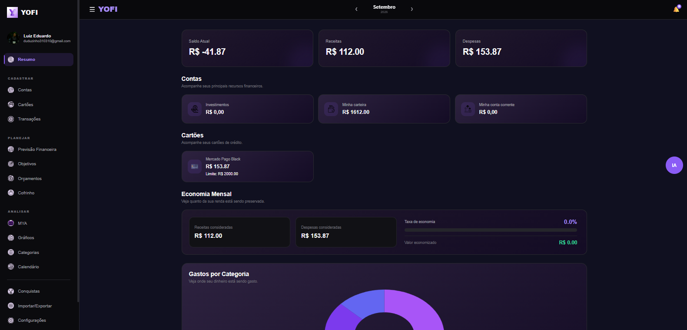
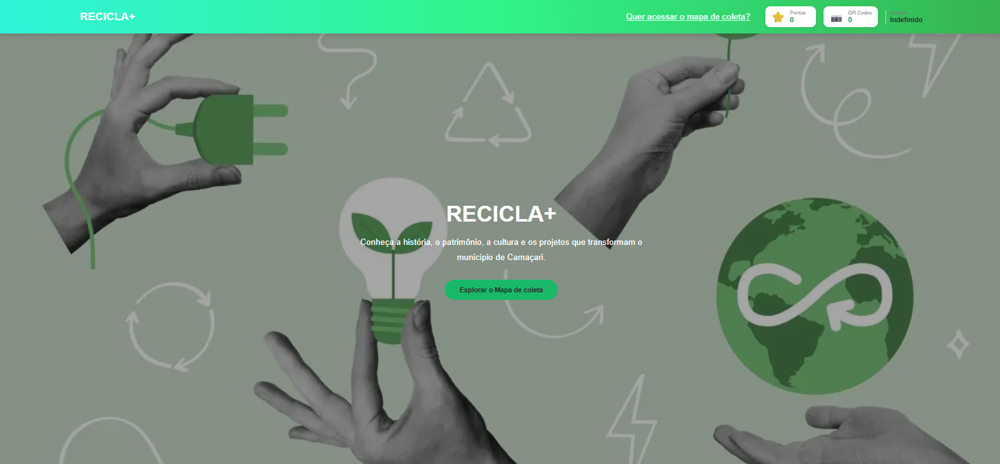
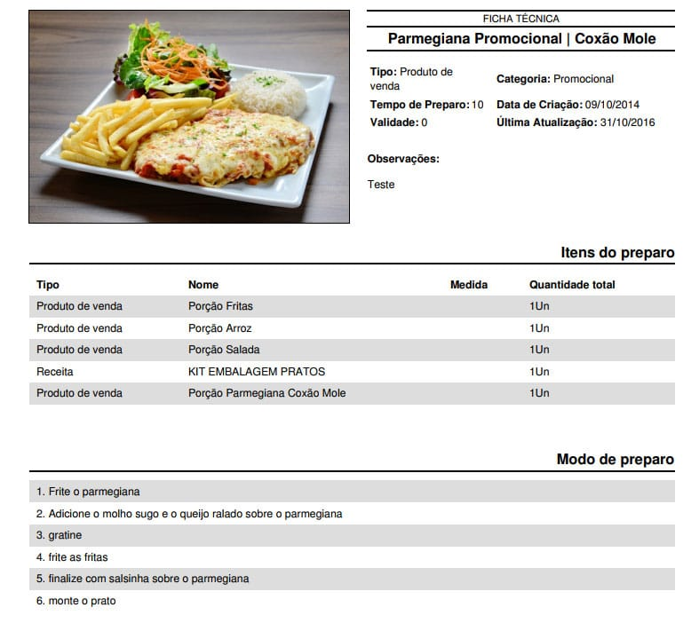

Luiz Eduardo
Desenvolvedor Web Backend
Sou estudante do SENAI e tenho experiência no desenvolvimento Backend de sites modernos, rápidos e funcionais por meio de Habilidade mediana em JS e Python3. Pretendo me formar em Engenharia de IA aplicada.
Sou estudante do SENAI e tenho experiência no desenvolvimento Backend de sites modernos, rápidos e funcionais por meio de Habilidade mediana em JS e Python3. Pretendo me formar em Engenharia de IA aplicada.

Aplicativo de finanças completo e multi plataforma. Pode ser usado no android em APK, no Windowns com .EXE e em formato de Site. Ele contém um agente de IA com gemma 4 31B Backend em Python+FastAPi & JS para conectar com o Front, além de banco de dados em PostgresSQL. Todo Backend fica na nuvem (render + Neon + OpenRoutter)

Projeto de Front end desenvolvido para resolver o problema da falta de reciclagem, incentivando ela por meio de um site interativo

Um projeto de ficha técnica para catalogar receitas usando node.js + electron builder com cauculos para Receitas e parte de venda, não inclui estoque.